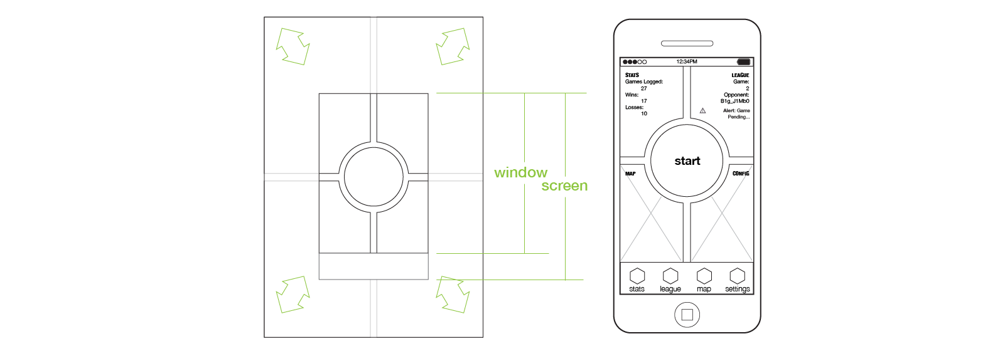
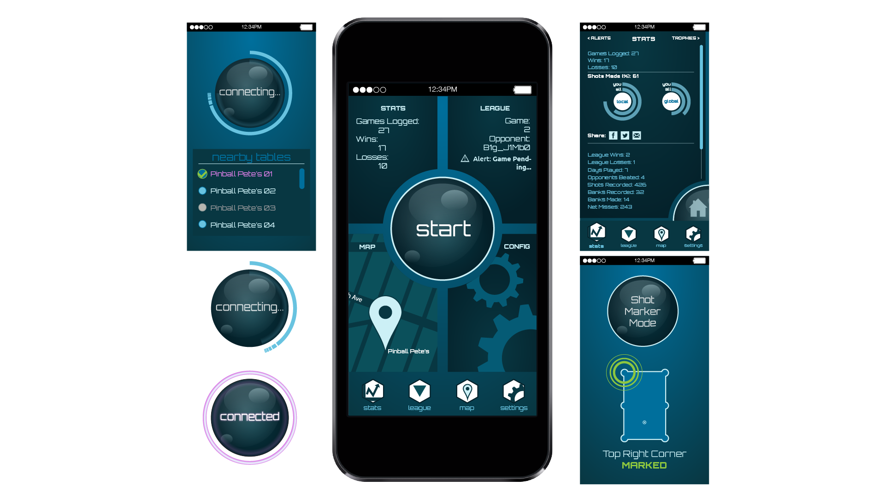

Born & Raised.
© 2014 | this website is 100%, lovingly hand-coded by Chris Jefferies
Connecting casual and enthusiastic billiards players with an app that connects to blue tooth enabled tables to track statistics and leagues.
Shadow League is an app design that would allow users to connect to sensors wired into specially enabled pool tables. Through blue tooth, users could utilize a table's camera and sensors to track their shots. Additionally, multiple users could connect to the same table, allowing the app to track their games competitively, and factor in leagues with a theoretically limitless number of players.
Once all of the visual hierarchy and content issues were solved in the wireframe stage, typography and color selection was next. The geometric, modern web fonts provide a streamlined look and feel without compromising readability or legibility. The cool base colors and loud accents further reinforce the next-generation aura.

Born & Raised.
© 2014 | this website is 100%, lovingly hand-coded by Chris Jefferies